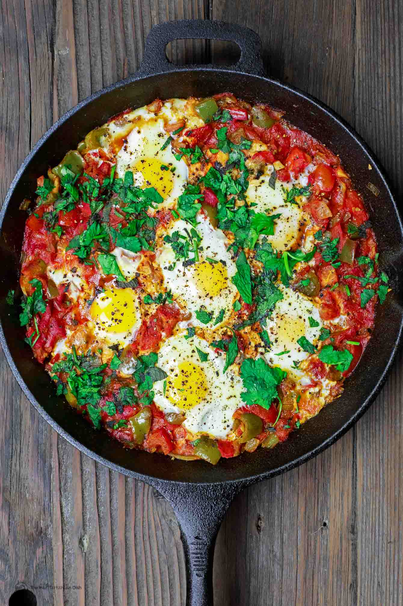

Shakshuka

Description
A traditional Middle-Eastern dish comprised of tomatoes, spices, and eggs. Though requiring an oven-safe saucepan, this is an excellent addition to any meal that brings a stylish presentation to the table as well!
Ingredients
- 6 Eggs
- 1 Can of tomato sauce
- 4 Roma tomatoes, chopped
- 1 Onion (either Sweet or Red)
- 5 Garlic Cloves
- 3 tbsp of Basil
- 1 tbsp of Thyme
Steps
- Preheat the oven to 400 degrees fahrenheit
- Add everything except the eggs into a 12-inch skillet/saucepan
- Turn the stovetop heat to MEDIUM-HIGH
- Stir occasionally until bubbling occurs
- Turn heat to LOW
- Using a spatula, create 6 "holes" around the skillet perimeter
- Crack an egg into each hole
- Transfer the skillet into the oven for about 10-20 minutes
OR until the eggs are cooked; this will depend on your oven and how you prefer your eggs
- Remove skillet from the oven
- Garnish with salt, pepper, and basil leaves
- Enjoy?
Back to the Top
Back to Home